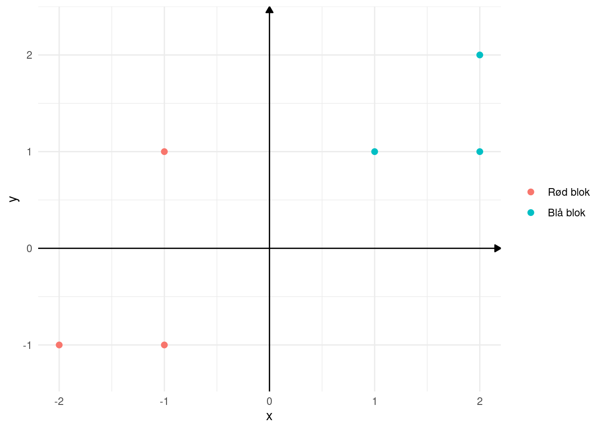
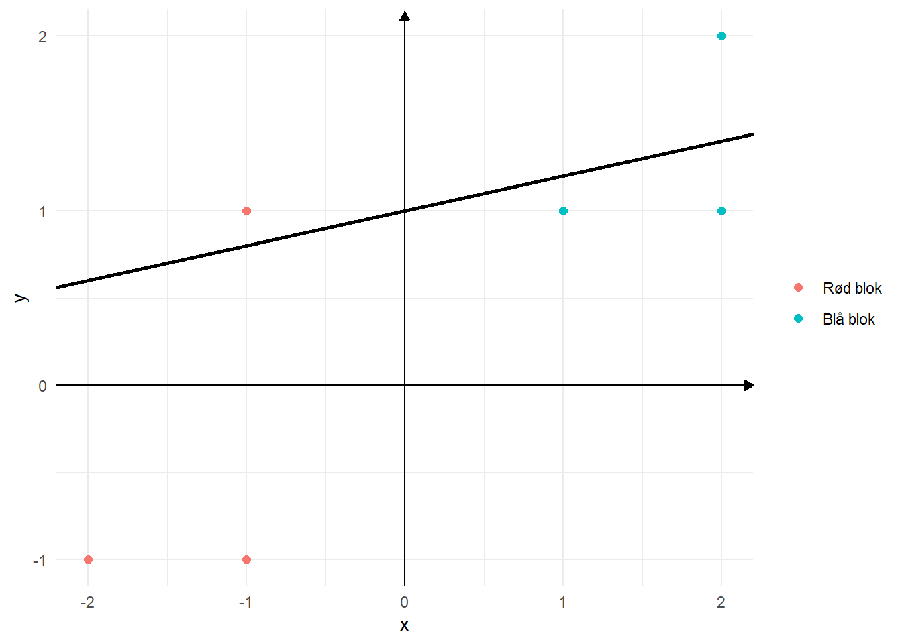
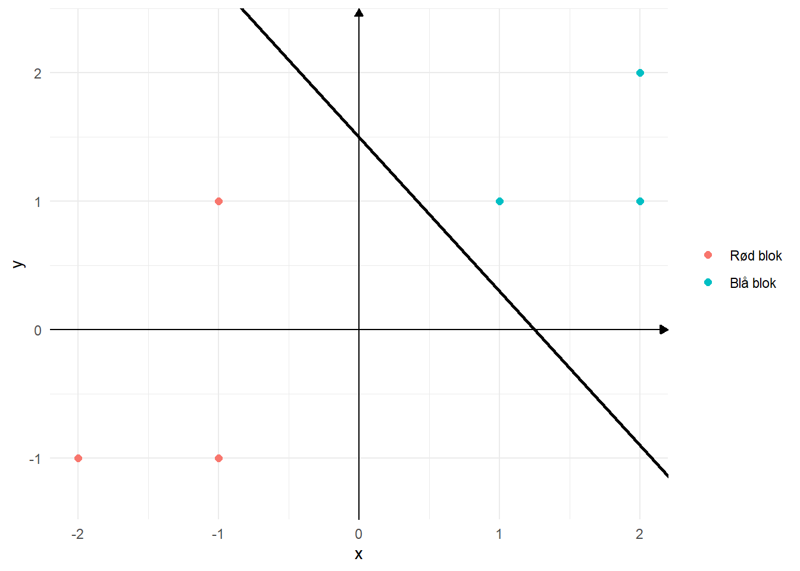
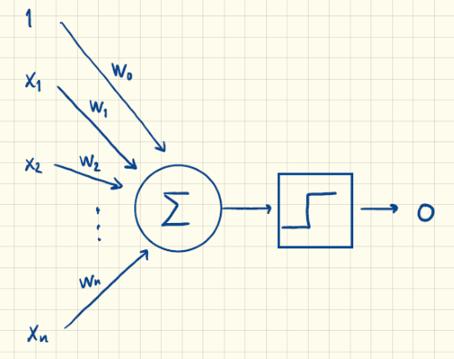
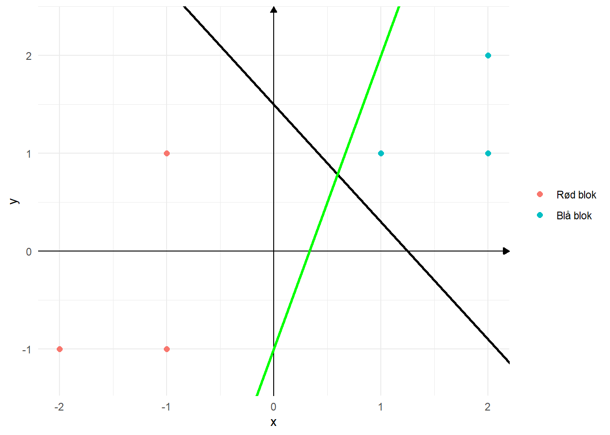
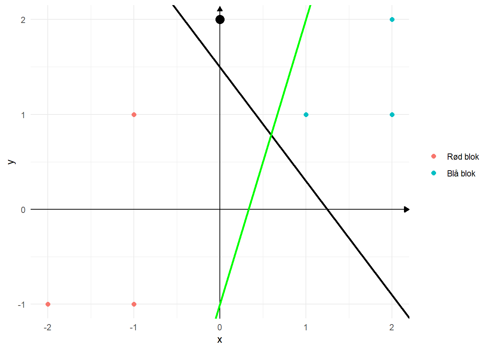
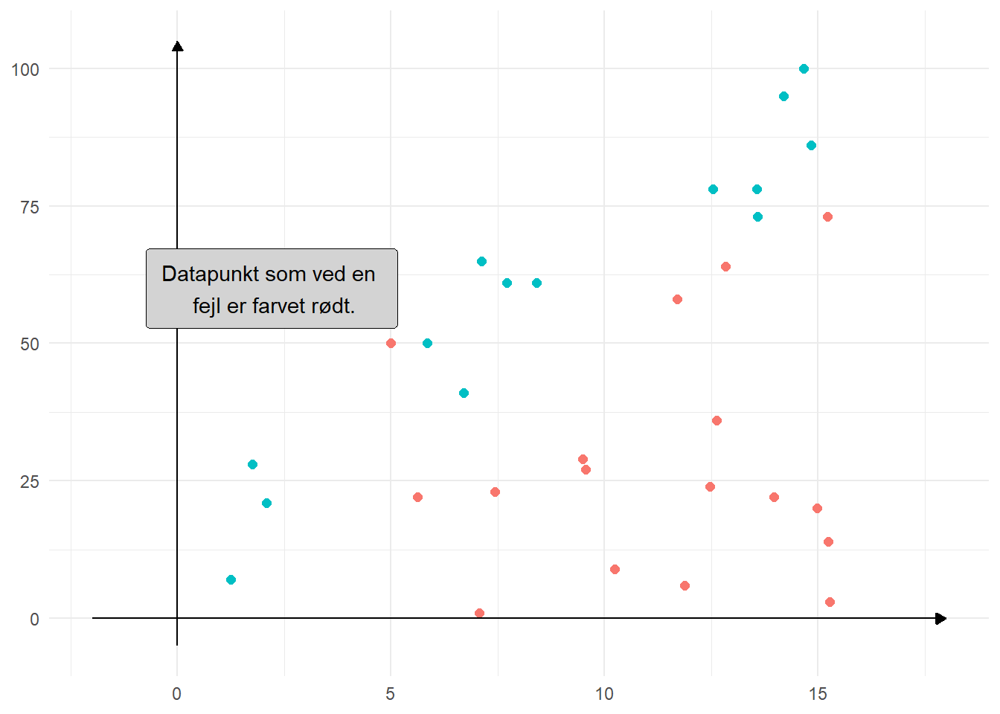
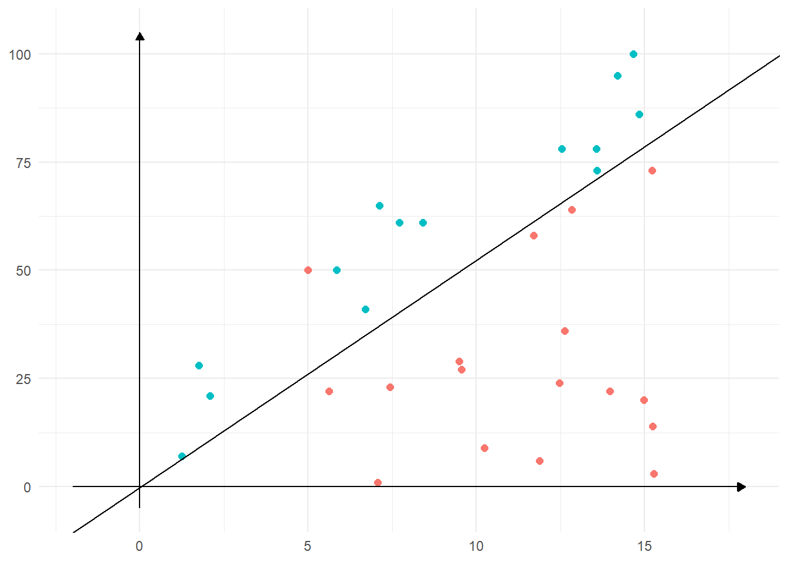
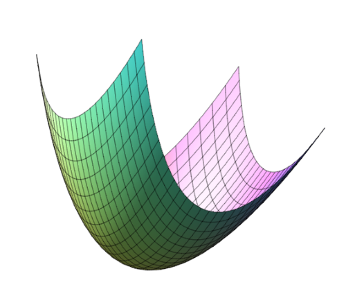
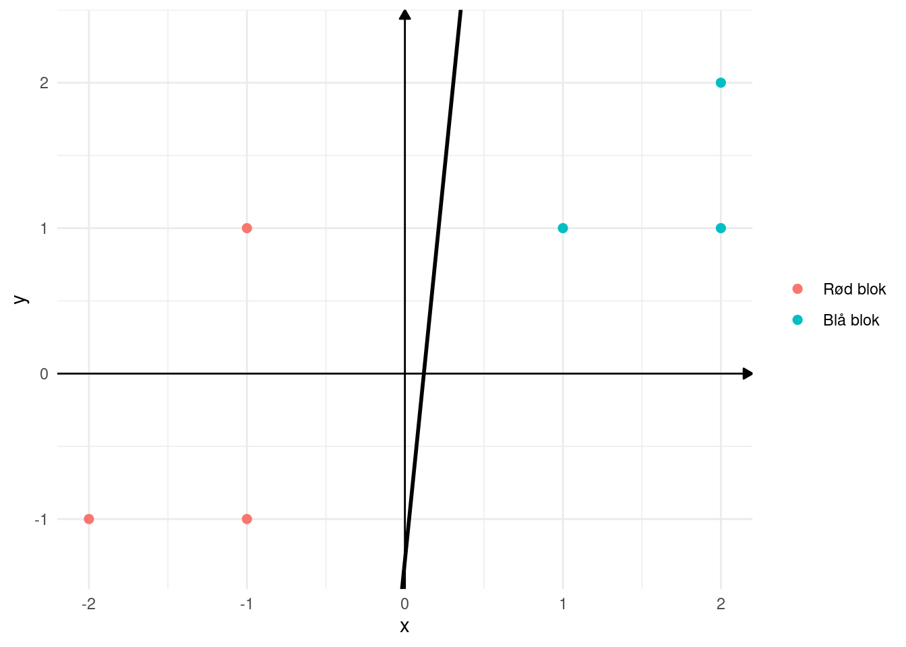

| Helt enig | Overvejende enig | Hverken/eller | Overvejende uenig | Helt uenig |
|---|---|---|---|---|
| 2 | 1 | 0 | -1 | -2 |
Perceptroner
Rosenblatts perceptron
Perceptroner... Hvorfor nu det? Jo, for det er faktisk sådan nogle, du ikke vidste, at du ikke kunne leve uden! Nu skal du høre hvorfor.
Eksempel: Hvem skal jeg stemme på ved næste valg?
De senere år er det blevet populært, at diverse medier laver forskellige kandidattests. Sådan nogle tests kan laves på mange forskellige måder - man kunne blandt andet bruge perceptroner! Testene fungerer som regel på den måde, at man bliver stillet en række forskellige spørgsmål og så skal man svare på en skala fra meget uenig til meget enig. Disse kategorier af svar kunne f.eks. oversættes til matematik på denne måde:
Lad os prøve at gøre det helt simpelt. I stedet for at komme med et bud på hvem man skal stemme på, så vil vi blot forsøge at komme med et bud på, om man skal stemme på rød eller blå blok (det er sikkert en håbløs simplificering, men det må du tale med din samfundsfagslærer om ).
Lad os sige at vi vil basere vores bud på to spørgsmål:
Jeg synes, at indkomstskatten skal sættes ned.
Jeg synes ikke, at danske virksomheder skal pålægges en CO2-afgift.
Vi kan sikkert hurtigt blive enige om, at hvis man er meget enig i begge spørgsmål, så hører man formentlig til i blå blok og modsat, hvis man er meget uenig i begge spørgsmål, så hører man nok mere hjemme i rød blok. Så at lave en perceptron, som kan hjælpe os med at forudsige det, er nok ikke raketvidenskab, men det kan ikke desto mindre hjælpe os med at forstå de bagvedliggende principper og hvordan disse sidenhen kan generaliseres.
Lad os prøve at blive lidt mere specifikke og indføre to variable \(x_1\) og \(x_2\), hvor
- \(x_1\): svaret på Jeg synes, at indkomstskatten skal sættes ned angivet på en skala fra -2 til 2
- \(x_2\): svaret på Jeg synes ikke, at danske virksomheder skal pålægges en CO2-afgift angivet på en skala fra -2 til 2.
Vores beslutning vil vi nu også kvantificere vha. en variabel \(t\), som kan antage to værdier, nemlig \(-1\) og \(1\). Hvis vi hører hjemme i blå blok, vil vi sætte \(t=1\), mens vi vil sætte \(t=-1\), hvis vi vil sætte vores krydset ved et rødt parti. Altså:
\[ \begin{aligned} t&=-1: &\text{Rød blok} \\ t&=1: &\text{Blå blok} \\ \end{aligned} \]
Nu forestiller vi os, at vi har bedt seks personer (som godt ved, hvem de vil stemme på - måske er det ligefrem politikere vi har spurgt) om at svare på de to spørgsmål og samtidig tilkendegive, om de vil stemme på blå eller rød blok. Lad os f.eks. sige, at den første person er meget enig i at indkomstskatten skal sættes ned (dvs. \(x_1=2\)), og at denne person er overvejende enig i at danske virksomheder ikke skal pålægges en CO2-afgift (dvs. \(x_2=1\)). Desuden oplyser denne person, at han/hun vil stemme på blå blok (dvs. \(t=1\)). Det kan udtrykkes sådan her: \[ (x_1,x_2)=(2,1) \quad \Rightarrow \quad t=1 \tag{1}\]
Og sådan kunne man opstille andre eksempler: \[ \begin{aligned} &(x_1,x_2)=(-1,1) \quad \Rightarrow \quad t=-1 \\ &(x_1,x_2)=(-1,-1) \quad \Rightarrow \quad t=-1 \\ &(x_1,x_2)=(1,1) \quad \Rightarrow \quad t=1 \\ &(x_1,x_2)=(2,2) \quad \Rightarrow \quad t=1 \\ &(x_1,x_2)=(-2,-1) \quad \Rightarrow \quad t=-1 \\ \end{aligned} \] Det første eksempel siger for eksempel, at en person har været overvejende uenig i at sætte indkomstskatten ned (\(x_1=-1\)), overvejende enig i at danske virksomheder ikke skal pålægges en CO2-afgift (\(x_2=1\)) og samtidig vil denne person stemme på rød blok (\(t=-1\)).
Vi kan prøve at indtegne \((x_1,x_2)\)-punkterne i et koordinatsystem og samtidig angive den tilhørende værdi af \(t\) med en farve. Det vil se sådan her ud:

Det kunne godt se ud som om, at det vil være muligt at indtegne en ret linje på en sådan måde, at alle punkter som ligger over linjen skulle farves blå (svarende til "her stemmer vi på blå blok"), mens alle punkter under linjen skulle farves røde (svarende til "her stemmer vi på rød blok"). En tilfældig indtegnet linje ses på figur 2.

Herunder ser du et bud på en linje, som ser ud til at være god til at adskille de blå punkter fra de røde – faktisk er der jo uendeligt mange linjer, som vil kunne adskille de blå punkter fra de røde:

Linjen på figur 3 har ligning \[\begin{aligned} y=-1.2 \cdot x+1.5.\end{aligned}\] Men nu kaldte vi jo faktisk ikke de to variable for \(x\) og \(y\), men derimod for \(x_1\) og \(x_2\). Med denne notation får vi altså, at \[ \begin{aligned} x_2=-1.2 \cdot x_1+1.5 \end{aligned} \] Hvis vi bruger denne ligning til at skelne imellem blå og røde punkter, så vil vi sige, at alle punkter, som ligger over linjen skal være blå. Det vil være det samme som at sige, at alle de blå punkter opfylder uligheden \[ \begin{aligned} x_2>-1.2 \cdot x_1+1.5. \end{aligned} \] Eller skrevet på en anden måde: \[ \begin{aligned} 1.2 \cdot x_1+ 1 \cdot x_2>1.5. \end{aligned} \] Her kalder man værdi \(1.5\) på højreside for threshold værdien (på dansk: tærskelværdi), fordi det er denne værdi, som afgør, om vi skal farve et punkt rødt eller blåt. Værdierne \(1.2\) og \(1\) kaldes for vægte, fordi de bestemmer, hvor meget inputværdierne \(x_1\) og \(x_2\) skal vægtes i forhold til hinanden.
En helt tredje måde at skrive det samme på vil være \[ \begin{aligned} -1.5+1.2 \cdot x_1+ 1 \cdot x_2>0. \end{aligned} \] Nu kalder man så bare værdien \(-1.5\) for en bias, men i virkeligheden er det jo bare threshold værdien med modsat fortegn1.
1 Der er forskellige overvejelser i forhold til valget af denne skrivemåde. For det første er vi gået væk fra \(x\) og \(y\) og over til \(x_1\) og \(x_2\). Det giver mening, fordi vi ofte tænker på \(y\) som den afhængige variabel og \(x\) som den uafhængige variabel. Denne fortolkning af de to variable giver ikke mening i denne sammenhæng. Derudover kan vi beskrive en vilkårlig linje i planen ved hjælp af ligningen \(ax_1+bx_2+c=0\) – også de lodrette linjer. Holder vi derimod fast i \(y=ax+b\), så kan vi ikke “fange” de lodrette linjer.
Vi har nu faktisk udledt en regel, som for tid og evighed kan hjælpe os med at afgøre, om vi skal stemme på rød eller blå blok. Den kan opsummeres sådan her:
Man siger også, at man på baggrund af inputværdierne kan lave en klassificering (eller kategorisering). Det betyder, at vi på baggrund af inputværdierne kan beregne, om vi er i kategorien "Blå blok" (\(o=1\)) eller i kategorien "Rød blok" (\(o=-1\)). Grafisk svarer det til, at man indtegner sit \((x_1, x_2)\)-punkt i koordinatsystemet i figur 3 og ser så på om punkt ligger over eller under linjen (ligger det over skal vi stemme blå blok).
Eksempel 1 Lad os sige at en vælger hverken er enig eller uenig i, at indkomstskatten skal sættes ned. Det vil sige, at \(x_1=0\). Samtidig er denne vælger meget enig i, at danske virksomheder ikke skal pålægges en CO2-afgift. Altså er \(x_2=2\). Vi udregner nu: \[ -1.5+1.2 \cdot x_1+x_2=-1.5+1.2 \cdot 0+2=0.5 \] Og da denne værdi er større end \(0\), sætter vi \(o=1\). Det vil sige, at vi vil anbefale denne vælger at stemme blå blok.
Det er da smart! Og det her er faktisk lige præcis idéen bag perceptroner, som den amerikanske psykolog Frank Rosenblatt foreslog helt tilbage i \(1958\). Den klassiske perceptron er defineret ved, at perceptronen kan modtage input \[ \begin{aligned} x_1, x_2, \dots, x_n, \end{aligned} \] hvor hver enkel inputværdi i princippet kan være et vilkårligt reelt tal. I vores eksempel har vi dog begrænset inputværdierne til \(x_1, x_2 \in \{-2,-1,0,1,2 \}\). Vi beregner så en outputværdi \(o\) vha. vægtene \(w_1, w_2, \dots, w_n\) og en biasværdi, som vi her vil kalde for \(w_0\) på denne måde: \[ \begin{aligned} o = \begin{cases} 1 & \text{hvis } w_0 + w_1 \cdot x_1 + \cdots + w_n \cdot x_n \geq 0 \\ -1 & \text{hvis } w_0 + w_1 \cdot x_1 + \cdots + w_n \cdot x_n < 0. \\ \end{cases} \end{aligned} \] Grafisk kan det illustreres sådan her:

Her illustrerer sumtegnet i cirklen, at vi tager en vægtet sum af alle inputværdierne (inklusiv et input (\(x_0\)), som altid er \(1\), og som vægtes med \(w_0\) svarende til, at vi får vores bias med), mens grafen af trappefunktionen i firkanten viser, at vi diskretiserer denne vægtede sum, sådan at outputværdien enten er \(-1\) eller \(1\).
VIDEO: Hvad er en perceptron?
I denne video forklarer vi ovenstående, men med udgangspunkt i et andet eksempel.
Perceptron Learning Algoritmen
Det er jo alt sammen meget fint, hvis man kender vægtene. Bum – så kan man beregne den vægtede sum \[ \begin{aligned} w_0 + w_1 \cdot x_1 + \cdots + w_n \cdot x_n. \end{aligned} \] Får vi et ikke-negativt tal sættes \(o\) til \(1\) og \(-1\) ellers. Præcis som vi gjorde det i eksempel 1. Men det kræver jo, at man kender vægtene \(w_0, w_1, \dots, w_n\)...! I vores eksempel med bare to inputværdier var det nemt nok at finde nogle passende værdier af vægtene. Vi tegnede bare punkterne \((x_1,x_2)\) ind i et koordinatsystem og slog en streg, der adskilte de røde punkter fra de blå punkter. Men hvis der er mere end to inputværdier (hvis man f.eks. i kandidattesten skal svare på 20 spørgsmål), så er det jo ikke helt så nemt! Hvad gør vi så?
Det havde Frank Rosenblatt faktisk også en idé til, som vi nu skal se nærmere på. Vi skal forestille os, at vi har en masse data, som vi så det i vores eksempel. Disse data kalder vi for træningsdata, og de vil dels bestå af konkrete inputværdier \(x_1, x_2, \dots, x_n\) og den tilhørende korrekte klassificering \(t\). Her bruger vi bogstavet \(t\) som en forkortelse for target-værdi – altså den "målværdi", som svarer til den rigtige klassificering. I vores eksempel viser (1) et eksempel på sådan et træningsdatasæt.
Lad os så se på hvad Rosenblatts "Perceptron Learning Algoritme" går nu ud på. Den kommer her:
Sæt alle vægte \(w_0, w_1, \dots, w_n\) til et tilfældigt tal (f.eks. \(0.5\)).
Tag et træningseksempel \((x_1, x_2, \dots, x_n)\) med tilhørende target-værdi \(t\).
Udregn outputværdien \(o\): \[ \begin{aligned} o = \begin{cases} 1 & \text{hvis } w_0 + w_1 \cdot x_1 + \cdots + w_n \cdot x_n \geq 0 \\ -1 & \text{hvis } w_0 + w_1 \cdot x_1 + \cdots + w_n \cdot x_n < 0. \\ \end{cases} \end{aligned} \]
Udregn fejlen \(error\) (som er forskellen mellem den ønskede target-værdi \(t\) og den beregnede outputværdi \(o\)): \[ \begin{aligned} error = t-o \end{aligned} \]
Opdatér alle vægtene: \[ \begin{aligned} w_0 \leftarrow w_0 + & \eta \cdot error \\ w_1 \leftarrow w_1 + & \eta \cdot error \cdot x_1 \\ w_2 \leftarrow w_2 + & \eta \cdot error \cdot x_2 \\ & \vdots \\ w_n \leftarrow w_n + & \eta \cdot error \cdot x_n \\ \end{aligned} \] Her er \(\eta\) (udtales “eta”) et tal mellem \(0\) og \(1\), som kaldes for en learning rate (på dansk: en læringsrate). Værdien af \(\eta\) afgør hvor hurtigt, vi skal opdatere vægtene. Hvis \(\eta\) er tæt på \(0\) opdateres vægtene langsomt, hvorimod en værdi af \(\eta\) tæt på \(1\) vil betyde, at vægtene opdateres hurtigt.
Start forfra med det næste træningseksempel indtil værdien af vægtene ikke ændrer sig.
Ovenstående fortsætter man altså med indtil, at vægtene ikke længere ændrer sig. Det vil altså sige, at man typisk vil komme tilbage og bruge det samme træningseksempel mange gange.
Nu kan man jo undre sig over, hvorfor perceptron learning algoritmen overhovedet virker, men det kommer vi tilbage til lige om lidt. Lad os først prøve den af på vores eget lille eksempel. Vi kan for overskuelighedens skyld starte med at stille vores træningsdata op i en tabel:
| Træningseksempel nr. | \(x_1\) | \(x_2\) | Targetværdi \(t\) |
|---|---|---|---|
| 1 | 2 | 1 | 1 |
| 2 | -1 | 1 | -1 |
| 3 | -1 | -1 | -1 |
| 4 | 1 | 1 | 1 |
| 5 | 2 | 2 | 1 |
| 6 | -2 | -1 | -1 |
Tabel 1: Træningsdata fra eksemplet om hvorvidt man skal stemme på blå eller rød blok.
Lad os nu prøve perceptron learning algoritmen af. Vi starter med at sætte vægtene til \(0.5\): \[ \begin{aligned} w_0 = 0.5, w_1=0.5, w_2=0.5 \end{aligned} \] og lad os også sætte vores learning rate til \(0.5\): \[ \eta = 0.5. \] Så tager vi udgangspunkt i træningseksempel \(1\) og udregner: \[ \begin{aligned} w_0+w_1\cdot x_1 + w_2 \cdot x_2 = 0.5 + 0.5 \cdot 2 + 0.5 \cdot 1 = 2 \end{aligned} \] Da denne værdi er positiv, bliver \(o=1\). Vores target-værdi \(t\) er også \(1\). Det betyder, at med disse værdier af vægtene bliver træningseksempel nr. \(1\) faktisk klassificeret korrekt. Derfor bliver fejlen også \[ \begin{aligned} error = t-o=1-1=0 \end{aligned} \] og derfor ender vi også med ikke at opdatere nogle af vægtene, fordi vi generelt har (hvor \(x_0=1\)): \[ \begin{aligned} w_i \leftarrow w_i + \eta \cdot error \cdot x_i, \end{aligned} \] men når \(error=0\) ender vi bare med \[ \begin{aligned} w_i \leftarrow w_i. \end{aligned} \] Altså ingen opdatering af vægtene. Det giver jo rigtig god mening, eftersom det første træningseksempel blev klassificeret korrekt.
Vi går nu videre til det næste træningseksempel og udregner: \[ \begin{aligned} w_0+w_1\cdot x_1 + w_2 \cdot w_2 = 0.5 + 0.5 \cdot (-1) + 0.5 \cdot 1 = 0.5. \end{aligned} \] Da denne værdi er positiv, bliver \(o=1\). Men nu er vores target-værdi \(t=-1\). Det vil altså sige, at dette træningseksempel klassificeres forkert, og derfor bliver fejlen også \[ \begin{aligned} error = t-o=-1-1=-2. \end{aligned} \] Vores vægte skal derfor opdateres til \[ \begin{aligned} w_0 &\leftarrow 0.5 +0.5 \cdot (-2) = -0.5 \\ w_1 &\leftarrow 0.5 +0.5 \cdot (-2) \cdot (-1) = 1.5 \\ w_2 &\leftarrow 0.5 +0.5 \cdot (-2) \cdot 1= -0.5 \\ \end{aligned} \]
Så går vi videre til træningseksempel \(3\) og udregner igen (men nu med de nye vægte!): \[ \begin{aligned} w_0+w_1\cdot x_1 + w_2 \cdot w_2 = -0.5 +1.5 \cdot (-1) -0.5 \cdot (-1) = -1.5. \end{aligned} \] Da denne værdi er negativ, bliver \(o=-1\). Men vores target-værdi er også \(t=-1\). Altså har vi igen en korrekt klassificering. Fejlen er derfor også: \[ \begin{aligned} error = t-o=-1-(-1)=0. \end{aligned} \] Og ingen af vægtene skal derfor opdateres.
Sådan fortsætter man nu med træningseksempel nr. \(4, 5\) og \(6\), og så starter man forfra igen med træningseksempel nr. \(1\), \(2\) og så videre. Når man har været igennem en hel runde af de \(6\) træningseksempler, hvor vægtene ikke har ændret sig, så stopper man! I vores lille eksempel kommer der faktisk ikke flere opdateringer af vægtene, og man ender derfor med følgende vægte: \[ \begin{aligned} w_0 = -0.5, w_1 = 1.5, w_2=-0.5 \end{aligned} \] Det svarer til ligningen \[ \begin{aligned} -0.5 +1.5 \cdot x_1 -0.5 \cdot x_2 = 0. \end{aligned} \] Indtegner man linjen med denne ligning i et koordinatsystem sammen med vores træningsdata, og den linje vi selv “sjussede” os frem til, så kommer det til at se sådan her ud (den grønne linje er den, som kommer fra perception learning algoritmen):

Det skal bemærkes, at hvis man vælger nogle andre startværdier af vægtene \(w_0, w_1\) og \(w_2\) end \(0.5\), så vil man som oftest også ende med nogle nye slutværdier af vægtene! Man vil stadig få en linje, som kan skille de blå punkter fra de røde punkter – det er bare en anden linje, som kan det samme! Hvis vi f.eks. som startværdier havde valgt \(w_0=-1.5, w_1=1.2\) og \(w_2=1\) (det svarer til vores eget oprindelige skøn - den sorte linje ovenfor), så vil alle træningseksemplerne allerede være klassificeret korrekt, dermed vil ingen af vægtene på noget tidspunkt blive opdateret (fordi fejlen hele tiden vil være 0), og vi vil i det tilfælde ende med den sorte linje som output fra algoritmen.
Eksempel 2 Vi vil nu se på, hvilken betydning de nye vægte får for vælgeren i eksempel 1. Vi har stadig, at \(x_1=0\) og \(x_2=2\). Vi udregner nu med de nye vægte: \[ -0.5+1.5 \cdot x_1-0.5 \cdot x_2=-0.5+1.5 \cdot 0-0.5 \cdot 2=-1.5 \] Nu har vi en værdi, som er mindre end \(0\), og derfor sætter vi \(o=-1\). Det vil sige, at vores anbefaling til denne vælger nu vil være at stemme på rød blok! Det kan måske virke overraskende, men figur 6 illustrerer hvorfor, vi ikke får det samme i de to tilfælde.

Det sorte punkt i \((0,2)\) repræsenterer vælgerens svar på de to spørgsmål. Her kan vi se, at punktet ligger over den sorte linje svarende til, at vi med denne klassificering anbefaler vælgeren at stemme på blå blok. Samtidig ligger punktet til venstre for den grønne linje og bruges denne linje til klassificering, vil vi nu anbefale vælgeren at stemme på rød blok.
Men hvorfor virker skidtet? Altså hvorfor kan perceptron learning algoritmen bruges til at adskille de røde punkter fra de blå? Det er ikke umiddelbart oplagt, at denne måde at opdatere vægtene på, ender med at give os en linje, som kan separerer de blå punkter fra de røde. Så lad os prøve at se lidt på, hvorfor det kan give mening.
Vi har allerede i vores eksempel set, at hvis de vægte, vi står med nu, korrekt kan klassificere vores træningsdata – det vil sige, at \(t=o\), så bliver fejlen \[ \begin{aligned} error = t-o=0 \end{aligned} \] og vi kommer slet ikke til at opdatere vægtene, fordi vi bare ender med \[ \begin{aligned} w_i \leftarrow w_i. \end{aligned} \] Hvis vi derimod står i den situation, at vores træningsdata ikke klassificeres korrekt, så vil \(t \neq o\). Der er her to muligheder: \[ \begin{aligned} \text{Mulighed 1:} \quad \quad &t=1 \quad \text{og} \quad o=-1 \quad \Rightarrow \quad error = t-o=2 \\ \text{Mulighed 2:} \quad \quad &t=-1 \quad \text{og} \quad o=1 \quad \Rightarrow \quad error = t-o=-2 \\ \end{aligned} \] Lad os starte med mulighed \(1\). Her er target-værdien \(t=1\), men outputværdien \(o\) er \(-1\). Når outputværdien er \(-1\), er det fordi, at \[ \begin{aligned} w_0 + w_1 \cdot x_1 + \cdots + w_n \cdot x_n < 0. \end{aligned} \] Vi kalder lige venstre siden for \(y_{old}\): \[ \begin{aligned} y_{old} = w_0 + w_1 \cdot x_1 + \cdots + w_n \cdot x_n. \end{aligned} \] Vi ville egentlig gerne have, at denne værdi \(y_{old}\) havde været positiv, fordi så ville vi have fået en rigtig klassificering. Vi ser nu på, hvad der sker efter opdateringen af vægtene. Da \(error=2\) i mulighed \(1\) har vi opdateringsreglen (hvor \(x_0=1\)): \[ \begin{aligned} w_i \leftarrow w_i + \eta \cdot error \cdot x_i = w_i + \eta \cdot 2 \cdot x_i. \end{aligned} \] Det vil sige, at næste gang vi skal beregne vores outputværdi, så skal vi bruge de nye vægte og udregne (vi kalder nu den nye værdi for \(y_{new}\)): \[ \begin{aligned} y_{new} = (w_0+\eta \cdot 2) + (w_1+\eta \cdot 2 \cdot x_1) \cdot x_1 + \cdots + (w_n+\eta \cdot 2 \cdot x_n) \cdot x_n, \end{aligned} \] hvor vi her har indsat de opdaterede vægte. Ganger vi ind i parenteserne får vi \[ \begin{aligned} y_{new} &= w_0+\eta \cdot 2 + w_1\cdot x_1 + \eta \cdot 2\cdot x_1^2 + \cdots + w_n \cdot x_n + \eta \cdot 2\cdot x_n^2 \\ &=w_0 + w_1 \cdot x_1 + \cdots + w_n \cdot x_n + \eta \cdot 2 + \eta \cdot 2\cdot x_1^2 + \cdots +\eta \cdot 2\cdot x_n^2 \\ &=y_{old} + \eta \cdot 2 \cdot(1 + x_1^2 + \cdots +x_n^2). \end{aligned} \] Men da \(\eta >0\) må \[ \begin{aligned} \eta \cdot 2 \cdot (1 + x_1^2 + \cdots +x_n^2) >0, \end{aligned} \] og derfor er \[ \begin{aligned} y_{new} > y_{old}. \end{aligned} \] Der er ingen, der siger, \(y_{new}\) er blevet positiv, som ønsket, men denne værdi er i hvert til fælde tættere på at være positiv, end den gamle værdi var. Derfor vil vi under alle omstændigheder være lidt tættere på at klassificere dette træningseksempel korrekt, end vi var før.
I mulighed \(2\) er target-værdien \(t=-1\), mens outputværdien \(o\) er \(1\). Det må så betyde, at \[ \begin{aligned} w_0 + w_1 \cdot x_1 + \cdots + w_n \cdot x_n \geq 0, \end{aligned} \] hvor vi egentlig gerne ville have haft, at denne værdi havde været negativ. I mulighed \(2\) er fejlen \(error=-2\) og opdateringsreglen bliver derfor \[ \begin{aligned} w_i \leftarrow w_i + \eta \cdot error \cdot x_i = w_i -\eta \cdot 2 \cdot x_i. \end{aligned} \] Med et helt tilsvarende argument som ovenfor, kan man nu vise, at \[ \begin{aligned} y_{new} < y_{old} \end{aligned} \] og igen er det ikke sikkert, at \(y_{new}\) er blevet negativ, men vi er i hvert tilfælde tættere på, end vi var før.
Ovenstående giver en intuitiv fornemmelse af, hvorfor perceptron learning algoritmen virker. Men det er stadig ikke klart, hvorfor det hele ender godt. Vi justerer jo hele tiden vægtene "til fordel for" ét træningseksempel ad gangen, og hvorfor kunne man ikke ende i en situation, hvor den næste justering baseret på det næste træningseksempel fuldstændig ødelægger den justering vi lige har lavet, så det første træningseksempel igen ikke nærmer sig en korrekt klassificering? Se det kræver et bevis at vise, at det hele går godt. Og det går faktisk heller ikke altid godt! Men man kan vise, at hvis de røde og de blå punkter ligger sådan, at de kan adskilles af en ret linje (man siger, at punkterne er lineært separable), så finder perceptron learning algoritmen altid en linje, som adskiller punkterne. Men hvis det ikke er tilfældet – altså hvis de røde og de blå punkter ikke kan adskilles af en ret linje – så går perceptron learning algoritmen i selvsving! Den kommer simpelthen aldrig frem til nogle værdier af vægtene, som bare tilnærmelsesvist kan bruges til at adskille punkterne. Man siger, at algoritmen ikke konvergerer.
VIDEO: Perceptron Learning Algoritmen
I denne video forklarer vi perceptron learning algoritmen.
Det kan gøres smartere med “Adaline”
Det er faktisk lidt noget rod. Altså det her med, at perceptron learning algoritmen ikke kan finde meningsfulde værdier af vægtene, hvis de røde og de blå punkter ikke kan adskilles af en ret linje. Det er der to grunde til:
Hvis der er små fejl i data – eksempelvis en targetværdi der er forkert. Et eksempel herpå ses i figur figur 7 (a). Her er et enkelt datapunkt fejlagtigt farvet rødt. Denne ene fejl får den konsekvens,at datapunkterne ikke længere er lineært separable. Perceptron learning algoritmen vil derfor ikke konvergere. Her ville det være smart med en algoritme, som vil give et fornuftigt svar, selvom der er små fejl i datasættet.
Verden er sjældent lineær separabel! Antag, at der ingen fejl er i datasættet i figur figur 7 (a). Alligevel vil det stadig give mening at indtegne en ret linje som i figur figur 7 (b), der kan bruges til klassificering. Med en enkelt undtagelse vil man klassificere alle træningsdata korrekt ved hjælp af denne linje.


Der er derfor brug for noget lidt andet end den klassiske perceptron, som Rosenblatt foreslog. Eller rettere sagt: perceptronen er god nok, det er faktisk bare læringsalgoritmen, som skal justeres lidt. Det viser sig nemlig, at problemet opstår fordi vi i læringsalgoritmen bruger det diskrete output \(o\): \[ \begin{aligned} o = \begin{cases} 1 & \text{hvis } w_0 + w_1 \cdot x_1 + \cdots + w_n \cdot x_n \geq 0 \\ -1 & \text{hvis } w_0 + w_1 \cdot x_1 + \cdots + w_n \cdot x_n < 0. \\ \end{cases} \end{aligned} \tag{2}\] i stedet for den vægtede sum \[ \begin{aligned} w_0 + w_1 \cdot x_1 + \cdots + w_n \cdot x_n. \end{aligned} \] Hvis for eksempel vi har et træningsdatasæt med en targetværdi på \(t=1\), som fejlagtigt klassificeres med \(o=-1\). Så er der i perceptron learning algoritmen ingen forskel på om \[ \begin{aligned} w_0 + w_1 \cdot x_1 + \cdots + w_n \cdot x_n = -0.1 \end{aligned} \] eller om \[ \begin{aligned} w_0 + w_1 \cdot x_1 + \cdots + w_n \cdot x_n = -5000. \end{aligned} \] I det første tilfælde er vægtene jo tæt på at være gode nok (den vægtede sum er jo næsten positiv), hvorimod de er meget langt fra at være gode nok i det andet tilfælde. Men det er perceptron learning algoritmen fuldstændig ligeglad med – begge tilfælde bliver behandlet helt ens! Så hvis vi skal rette op på perceptron learning algoritmen må vi gå fra at se på fejlen \[ \begin{aligned} error = t-o \end{aligned} \] til at se på \[ \begin{aligned} error = t - (w_0 + w_1 \cdot x_1 + \cdots + w_n \cdot x_n) \end{aligned} \] Bemærk, at i vores lille eksempel så vil perceptron learning algoritmen give fejlen \[ \begin{aligned} error = t-o=1-(-1)=2 \end{aligned} \] i begge tilfælde. Hvis vi i stedet bruger \(error = t - (w_0 + w_1 \cdot x_1 + \cdots + w_n \cdot x_n)\) får vi: \[ \begin{aligned} &\text{Tilfælde 1:} \quad error = 1-(-0.1)=1.1 \\ &\text{Tilfælde 2:} \quad error = 1-(-5000)=5001 \end{aligned} \] Her bliver det meget tydeligt, at fejlen er lille i tilfælde 1 og stor i tilfælde 2. Hvis vi skal tage højde for det i vores opdateringsalgoritme, så må vi altså væk fra den meget simple måde, at definere fejlen på og i stedet se på fejlen som: \(error = t - (w_0 + w_1 \cdot x_1 + \cdots + w_n \cdot x_n)\). Dette er præcis, hvad man gør i ADAPTIVE LINEAR neuroner (Adaline).
For at forstå læringsalgoritmen i Adaline må vi først indføre en tabsfunktion, som skal give et samlet mål for, hvor god/dårlig perceptronen klassificerer alle træningsdata for givne værdier af vægtene. Men først er vi nødt til at indføre lidt ny notation, så vi kan skelne de forskellige træningsdata fra hinanden. Antag, at vi har \(M\) træningseksempler. Så vil vi opskrive de \(M\) træningseksempler på denne måde: \[ \begin{aligned} &\text{Træningseksempel 1:} \quad (x_{1,1}, x_{1,2}, \dots, x_{1,n}, t_1) \\ & \quad \quad \quad \quad \vdots \\ &\text{Træningseksempel m:} \quad (x_{m,1}, x_{m,2}, \dots, x_{m,n}, t_m) \\ & \quad \quad \quad \quad \vdots \\ &\text{Træningseksempel M:} \quad (x_{M,1}, x_{M,2}, \dots, x_{M,n}, t_M) \\ \end{aligned} \] Det vil altså sige, at det \(m\)’te træningseksempel har inputværdier \((x_{m,1}, x_{m,2}, \dots, x_{m,n})\) og targetværdi \(t_m\).
Vi definerer nu tabsfunktionen \(E\) på følgende måde: \[ \begin{aligned} E(w_0, w_1, \dots, w_n) = \frac{1}{2} \sum_{m=1}^{M} \left (t_m- (w_0 + w_1 \cdot x_{m,1} + \cdots + w_n \cdot x_{m,n}) \right)^2 \end{aligned} \tag{3}\] Men hvorfor giver det nu god mening? Jo, det gør det, fordi udtrykket i parentesen \[ \begin{aligned} t_m-(w_0 + w_1 \cdot x_{m,1} + \cdots + w_n \cdot x_{m,n}) \end{aligned} \] angiver fejlen, som vi så det i eksemplet ovenfor. Det er altså forskellen mellem den ønskede targetværdi \(t_m\) for det \(m\)’te træningseksempel og den vægtede sum \[ \begin{aligned} w_0 + w_1 \cdot x_{m,1} + \cdots + w_n \cdot x_{m,n}, \end{aligned} \] som perceptronen beregner, inden vi finder den endelig outputværdi \(o\) ved at benytte (2). Denne forskel kan være både positiv og negativ – og et stort positivt tal er lige så "slemt", som det tilsvarende negative tal. Derfor sætter man forskellen i anden for at slippe af med fortegnene. Endelig lægger vi alle de kvadrerede fejlled fra alle de \(M\) træningsdata sammen (og ganger med en halv – det er ikke så afgørende – du ser lige om lidt hvorfor). Hvis vores perceptron med de nuværende værdier af vægtene er god til at klassificere alle træningseksemplerne, så vil vores tabsfunktion give en lille værdi og omvendt, hvis perceptronen er dårlig til at klassificere, vil tabsfunktionen give en stor værdi. Se det er faktisk hele humlen. Vi skal finde de værdier af vægtene \(w_0, w_1, \dots, w_n\), som minimerer tabsfunktionen!
VIDEO: Perceptron Learning versus Adaline
I denne video forklarer vi idéen bag Adaline og indfører tabsfunktionen.
Gradientnedstigning
For at gøre det bruges en metode, som kaldes for gradientnedstigning. For at forklare hvad det går ud på, er det nemmest at se på en tabsfunktion, som kun afhænger af to vægte \(w_0\) og \(w_1\). I det tilfælde får vi \[ \begin{aligned} E(w_0, w_1) = \frac{1}{2} \sum_{m=1}^{M} \left (t_m- (w_0 + w_1 \cdot x_{m,1}) \right)^2. \end{aligned} \] Da tabsfunktionenkun afhænger af to variable, kan vi tegne grafen for den. Et eksempel herpå ses i figur 8.

Idéen er nu, at vi gerne vil bestemme vægtene \(w_0\) og \(w_1\), sådan at tabsfunktionen minimeres. Tænk lidt over det. Det giver god mening, at bestemme vægtene sådan at den samlede fejl, perceptronen begår på træningsdata, bliver så lille som mulig. Vi ved faktisk godt, hvordan man bestemmer minimum for en funktion af to variable. Løs ligningerne \[ \begin{aligned} \frac{\partial E}{\partial w_0} = 0 \quad \text{og} \quad \frac{\partial E}{\partial w_1} = 0.\end{aligned} \] Det er en overkommelig opgave at finde de partielle afledede og sætte dem lig med \(0\) i det tilfælde, hvor tabsfunktionen kun afhænger af to vægte. Men vi skal senere se, at perceptroner bliver fundamentale byggesten i kunstige neurale netværk, og her viser det sig, at denne fremgangsmåde med at sætte de partielle afledede lig \(0\), er helt håbløs! Derfor bruger man gradientnedstigning.
Forestil dig at grafen for tabsfunktionen i figur 8 er et landskab med en dal. Dit mål er at finde ned i dalen. Du er blevet placeret et tilfældigt sted i landskabet svarende til tilfældige værdier af \(w_0\) og \(w_1\). Hvad gør du? Jo, du kommer i tanke om, at du har lært, at hvis du går i gradientens \[ \begin{aligned} \nabla E(w_0,w_1) = \begin{pmatrix} \frac{\partial E }{\partial w_0}(w_0,w_1) \\ \\ \frac{\partial E }{\partial w_1}(w_0,w_1) \end{pmatrix} \end{aligned} \] retning, så kommer du til at gå i den retning, hvor det går allermest opad bakke! Men hov det er jo ikke det, vi vil! Vi vil gå allermest nedad bakke, så vi ender i dalen. Hvad gør vi så? Vi vender os da bare \(180^{\circ}\) og går i den modsatte retning - så ender vi nede i dalen! Det vil sige, at vi går i retning af minus gradienten: \[ \begin{aligned} - \nabla E(w_0,w_1) = \begin{pmatrix} - \frac{\partial E }{\partial w_0}(w_0,w_1) \\ \\ - \frac{\partial E }{\partial w_1}(w_0,w_1) \end{pmatrix} \end{aligned} \] Fremgangsmåden bliver derfor den, at vi starter i nogle tilfældige \((w_0, w_1)\)-værdier og så bevæger vi os et lille skridt i den negative gradients retning. Så ender vi i et nyt punkt, hvor vi igen beregner gradienten og går igen et lille skridt i den negative gradients retning. Sådan fortsætter vi indtil værdien af tabsfunktionen ikke rigtig ændrer sig mere – det svarer til at vi har ramt dalen. Derfor bliver vores opdateringsregler med denne metode \[ \begin{aligned} w_0 \leftarrow & w_0 - \eta \cdot \frac{\partial E }{\partial w_0} \\ w_1 \leftarrow & w_1 - \eta \cdot \frac{\partial E }{\partial w_1} \\ &\vdots \\ w_n \leftarrow & w_n - \eta \cdot \frac{\partial E }{\partial w_n} \\ \end{aligned} \] Her er \(\eta\) igen en learning rate f.eks. \(0.05\), som sørger for, at vi hele tiden bare tager et lille skridt i den negative gradients retning. Man vælger værdien af \(\eta\) lille for ikke at lave alt for store justeringer af vægtene ad gangen. Det svarer grafisk til, at vi lige så stille går ned af den bakke, som tabsfunktionen giver (se figur 8). Hvis vi tager for store skridt, risikerer vi helt, at komme til at “træde forbi” det minimum, som vi gerne vil lande i. Omvendt vil alt for små skridt føre til, at vi alt for langsomt nærmer os minimum. Så værdien af \(\eta\) angiver altså, hvor meget vi er villige til at justere vægtene og dermed hvor hurtige eller hvor langsomme, vi bevæger os ned mod minimum. Af den grund giver det god mening, at \(\eta\) kaldes for en learning rate - fordi den afgører, hvor hurtigt vi lærer af vores træningsdata.
Nu mangler vi bare at få bestemt de partielle afledede. Ved at bruge sumreglen og kædereglen for differentiation får vi fra (3), at \[ \begin{aligned} \frac{\partial E}{\partial w_i} &= \frac{1}{2} \sum_{m=1}^{M} \frac{\partial}{\partial w_i}\left (t_m- (w_0 + w_1 \cdot x_{m,1} + \cdots + w_n \cdot x_{m,n}) \right)^2 \\ &= \frac{1}{2} \sum_{m=1}^{M} 2 \cdot \left (t_m- (w_0 + w_1 \cdot x_{m,1} + \cdots + w_n \cdot x_{m,n}) \right) \\ & \quad \quad \quad \quad \quad \quad \cdot \frac{\partial}{\partial w_i} \left (t_m- (w_0 + w_1 \cdot x_{m,1} + \cdots + w_n \cdot x_{m,n} ) \right) \\ &= \sum_{m=1}^{M} \left (t_m- (w_0 + w_1 \cdot x_{m,1} + \cdots + w_n \cdot x_{m,n}) \right) \cdot \left (-x_{m,i} \right) \end{aligned} \] for \(i \in \{1, 2, \dots, n\}\).
Læg mærke til at når vi differentierer den indre funktion \[ \begin{aligned} t_m-(w_0 + w_1 \cdot x_{m,1} + \cdots + w_n \cdot x_{m,n}) \end{aligned} \] med hensyn til \(w_i\), så vil alle led være at betragte som konstanter bortset fra leddet \[ \begin{aligned} -w_i \cdot x_{m,i} \end{aligned} \] og når vi differentierer dette led med hensyn til \(w_i\) får vi netop \(- x_{m,i}\). Læg også mærke til at hvis vi differentierer med hensyn til \(w_0\), så får vi, \[ \begin{aligned} \frac{\partial E}{\partial w_0} = \sum_{m=1}^{M} \left (t_m- (w_0 + w_1 \cdot x_{m,1} + \cdots + w_n \cdot x_{m,n}) \right) \cdot \left (-1 \right). \end{aligned} \] Altså bliver vores opdateringsregler \[ \begin{aligned} w_0 \leftarrow & w_0 + \eta \cdot \sum_{m=1}^{M} \left (t_m- (w_0 + w_1 \cdot x_{m,1} + \cdots + w_n \cdot x_{m,n}) \right) \\ w_1 \leftarrow & w_1 + \eta \cdot \sum_{m=1}^{M} \left (t_m- (w_0 + w_1 \cdot x_{m,1} + \cdots + w_n \cdot x_{m,n}) \right) \cdot \left (x_{m,1} \right)\\ &\vdots \\ w_n \leftarrow & w_n + \eta \cdot \sum_{m=1}^{M} \left (t_m- (w_0 + w_1 \cdot x_{m,1} + \cdots + w_n \cdot x_{m,n}) \right) \cdot \left (x_{m,n} \right)\\ \end{aligned} \] Vi kan altså sammenfatte gradientnedstigningsalgoritmen på denne måde:
Sæt alle vægte \(w_0, w_1, \dots, w_n\) til et tilfældigt tal (f.eks. \(0.5\)).
Vælg en værdi af \(\eta\) (f.eks. \(0.05\)).
Udregn på baggrund af alle træningsdata fejlene: \[ \begin{aligned} error_0 &= \sum_{m=1}^{M} \left (t_m-(w_0 + w_1 \cdot x_{m,1} + \cdots + w_n \cdot x_{m,n}) \right) \\ error_1 &= \sum_{m=1}^{M} \left (t_m-(w_0 + w_1 \cdot x_{m,1} + \cdots + w_n \cdot x_{m,n}) \cdot x_{m,1} \right) \\ &\vdots \\ error_n &= \sum_{m=1}^{M} \left (t_m-(w_0 + w_1 \cdot x_{m,1} + \cdots + w_n \cdot x_{m,n}) \cdot x_{m,n} \right) \end{aligned} \]
Opdatér alle vægtene: \[ \begin{aligned} w_0 \leftarrow & w_0 + \eta \cdot error_0 \\ w_1 \leftarrow & w_1 + \eta \cdot error_1 \\ & \vdots \\ w_n \leftarrow & w_n + \eta \cdot error_n \end{aligned} \]
Start forfra indtil vægtene ikke ændrer sig (særlig meget).
Eksempel på gradientnedstigning
Lad os prøve at bruge gradientnedstigning på vores eksempel omkring kandidattest. I dette simple eksempel bliver vores opdateringsregler nu \[ \begin{aligned} w_0 \leftarrow & w_0 + \eta \cdot \sum_{m=1}^{6} \left (t_m- (w_0 + w_1 \cdot x_{m,1} + w_2 \cdot x_{m,2}) \right) \\ w_1 \leftarrow & w_1 + \eta \cdot \sum_{m=1}^{6} \left (t_m- (w_0 + w_1 \cdot x_{m,1} + w_2 \cdot x_{m,2}) \right) \cdot \left (x_{m,1} \right)\\ w_2 \leftarrow & w_2 + \eta \cdot \sum_{m=1}^{6} \left (t_m- (w_0 + w_1 \cdot x_{m,1} + w_2 \cdot x_{m,2}) \right) \cdot \left (x_{m,2} \right) \end{aligned} \] Hvis man bruger disse opdateringsregler på dataene fra tabel 1, så ender man med følgende værdier af vægtene \[ \begin{aligned} w_0 =-0.0769 , w_1=0.6410, w_2=-0.0598 \end{aligned} \] hvor vi startede med værdierne \(w_0=0.5, w_1=0.5\) og \(w_2=0.5\) og hvor vi satte \(\eta=0.05\). Dette svarer til linjen med ligning \[ \begin{aligned} -0.0769 + 0.6410 \cdot x_1 - 0.0598 \cdot x_2 = 0. \end{aligned} \] Linjen er indtegnet sammen med træningsdata i figur 9.

Bemærk, at til forskel fra perceptron learning algoritmen så ender man med de samme værdier af vægtene, selvom man vælger andre startværdier. Det er fordi, vi finder et globalt minimum for tabsfunktionen, som er uafhængig af det punkt, hvor vi starter med at lede. Det svarer til, at ligegyldigt hvor du bliver placeret i landskabet i figur 8, så vil du til sidst ende i dalen, hvis du hele tiden går små skridt i den negative gradients retning.
Eksempel 3 Vi ser igen på eksempel 1 og eksempel 2, hvor \(x_1=0\) og \(x_2=1\). Baseret på vægtene fra gradientnedstigning, får vi: \[ -0.0769+0.6410 \cdot x_1 -0.0598 \cdot x_2=-0.0769+0.6410 \cdot 0 -0.0598 \cdot 1=-0.1367 \] Da denne værdi er mindre end \(0\), sætter vi \(o=-1\). Altså er vi tilbage til at befale vælgeren at stemme på rød blok.
Forskel på perceptron learning og gradientnedstigning
Der er flere forskelle på perceptron learning algoritmen og gradientnedstigning. Vi har allerede været inde på, at perceptron learning algoritmen går i kuk, hvis data ikke er lineært separable, som i figur 7 (b). Mere formelt vil perceptron learning algoritmen ikke konvergere. I det tilfælde vil gradientnedstigning alligevel komme med et bud på værdier af vægtene, som kan bruges til at kategorisere træningsdata, selvom alle træningsdata ikke vil blive klassificeret korrekt (fordi de netop ikke er lineært separable). En anden forskel ligger i hvornår vægtene opdateres. I perceptron learning algoritmen opdateres vægtene efter hvert træningseksempel. I gradientnedstigning bruger man alle træningsdata for at lave en enkelt opdatering af vægtene. Hvis man har mange træningsdata, kan det godt blive lidt tungt. Så kan man i stedet for vælge at bruge et mindre, tilfældigt udvalg af data (for eksempel \(10\%\)) til hver opdatering og så til næste opdatering bruge et nyt tilfældigt udvalg af data. Denne fremgangsmåde kaldes for stokastisk gradientnedstigning. En anden mulighed er at lave online gradientnedstigning, hvor man opdaterer vægtene for hvert træningseksempel, som i perceptron learning algoritmen. Selvom det kun er en tilnærmelse til rigtig gradientnedstigning, så har det alligevel en række fordele: 1) Det er meget hurtigere at opdatere vægtene. 2) I nogle anvendelser vil man have brug for løbende at opdatere vægtene på baggrund af nye træningsdata. I stedet for at gemme alle de mange træningsdata kan man bare opdatere vægtene, hver gang man får et nyt træningseksempel til rådighed og så eventuelt slette træningseksemplet igen, når vægtene er blevet opdateret. Det er både hurtigere og mere pladsbesparende.
VIDEO: Adaline
I denne video forklarer vi, hvad gradientnedstigning går ud på, og hvordan gradientnedstigning bruges til at opdatere vægtene i Adaline.
Noten som pdf
Videre læsning
Baktoft, Allan. 2014. Matematik i Virkeligheden. Bind 2. Forlaget Natskyggen.
Bishop, Christopher M. 2006. Pattern Recognition and Machine Learning. Springer.
Chandra, Akshay L. 2018a. McCulloch-Pitts Neuron – Mankind’s First Mathematical Model of a Biological Neuron. https://towardsdatascience.com/mcculloch-pitts-model-5fdf65ac5dd1.
———. 2018b. Perceptron Learning Algorithm: A Graphical Explanation of Why It Works. https://towardsdatascience.com/perceptron-learning-algorithm-d5db0deab975.
———. 2018c. Perceptron: The Artificial Neuron (an Essential Upgrade to the McCulloch-Pitts Neuron). https://towardsdatascience.com/perceptron-the-artificial-neuron-4d8c70d5cc8d.
Loiseau, Jean-Christophe B. 2019. Rosenblatt’s Perceptron, the First Modern Neural Network. A Quick Introduction to Deep Learning for Beginners. https://towardsdatascience.com/rosenblatts-perceptron-the-very-first-neural-network-37a3ec09038a.
———. 2020. Improving Upon Rosenblatt’s Perceptron. Adaptive Linear Neurons and the Delta Rule. https://towardsdatascience.com/improving-upon-rosenblatts-perceptron-d0517d3c5939.
Mitchell, Tom M. 1997. Machine Learning. The McGraw-Hill Companies, Inc.
Nielsen, Michael A. 2015. Neural Networks and Deep Learning. Determination Press. http://neuralnetworksanddeeplearning.com/index.html.
Raschka, Sebstian. n.d. Single-Layer Neural Networks and Gradient Descent. https://sebastianraschka.com/Articles/2015_singlelayer_neurons.html.
Roy, Baijayanta. n.d. All about Feature Scaling. https://towardsdatascience.com/all-about-feature-scaling-bcc0ad75cb35.
Sørensen, Henrik Kragh, and Mikkel Willum Johansen. 2020. "Invitation Til de Datalogiske Fags Videnskabsteori". Lærebog Til Brug for Undervisning Ved Institut for Naturfagenes Didaktik, Københavns Universitet. Under udarbejdelse.